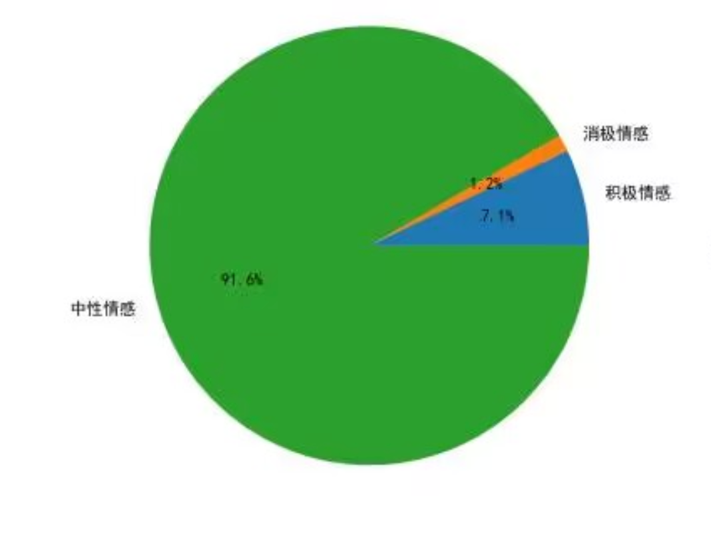

武汉纺织大学 · 商务智能课程设计
本研究以武汉纺织大学校园频道为案例，综合运用数据爬取、文本处理和可视化分析技术，对2025年9月22日至11月8日期间的频道聊天数据进行了多维度考察。超越了传统的话题分类，构建了一个包含话题高频度指数、时间分布规律、社交场景关联度、话题互动深度指数、情感价值导向指数等在内的综合指标体系。通过分析超过20万条聊天记录，本研究不仅揭示了学生关注的核心话题（话题高频度指数）及其每日/每月演变规律（时间分布），还量化了不同场景下的社交互动模式（社交场景关联度）与话题讨论质量（互动深度指数），并评估了社群的情感基调（情感价值导向指数）。研究旨在绘制一幅精准、动态的学生群体行为画像，为校园精细化治理与人文关怀提供前沿的数据驱动视角。 关键词：数据可视化；校园舆情；学生行为分析；文本挖掘；武汉纺织大学；行为画像；时间序列分析；情感分析；社交网络分析；
数据周期：2025-09-24 ~ 2025-11-08
封面、目录、项目背景、方法论框架
· 10 万+ 消息，覆盖 2000+ 群聊/私聊线程、600+ 核心用户
· 解析字段：成员、消息时间、媒介类型、关键词、情绪、毒性标签
· 形成可复用的 Dashboard 数据层（dashboard_data.json）与 NLP summary
· 谁是跨群扩散的关键节点？
· 哪些群体存在单点喧哗 / 运营风险？
· 何时最活跃、聊什么、反馈速度如何？
· 主题生态/内容结构是否支撑活动与增长？
· 如何用 NLP/KMeans 沉淀策略与预警？
① 数据清洗 → 用户/会话维度聚合
② 指标建模：影响力（发言×跨群）、健康度（Gini）、时间序列（DAU、小时活跃）
③ NLP：话题分类、意图/情绪/毒性预测，抽取核心话题覆盖率
④ KMeans：对消息内容、用户行为、会话健康进行聚类，形成画像
· PPT 化网页：封面 + 目录 + 每指标单页
· 每页包含图表 + 文字洞察 + 行动建议提示
· 附录提供 NLP 报告、conversation insights 表格、自动嵌入补充图表
· 上层领导可直接滚动演示；下沉运营可依据指标执行
超级节点、桥接散点、参与会话数 Top10
用消息量 + 跨群覆盖构成“扩散能量”双轴，识别最值得维护的 KOC/KOL。
技术说明：调用 analyze_user_activity.py 聚合消息 -> 用户粒度数据，再在前端用 Chart.js 的组合图展示消息量和跨群数。
分析建议：跨群覆盖 ≥8 且消息量在前 10 的成员建议纳入“种子用户池”，在发起活动、转发报名表时优先触达。
桥接指数 = 发言量 × 跨群数，用散点呈现高杠杆人群，辅助活动种子用户招募与信息覆蓋策略。
技术说明：后端计算 uniqueSessions 与 activeDays，并自定义 tooltip 告知“桥接数×活跃天”；散点尺寸映射 cluster 中心距。
分析建议：右上象限 = 同时高活跃 + 多群，建议建立“校园情报小组”；左下象限为普通成员，可结合激励盘活。
技术说明：统计每位用户参与的独立会话数，并输出 Top10 柱状图，展示“跨群穿梭者”分布；使用 Pandas 聚合 + Matplotlib 导出。
分析要点：参与会话多的用户适合作为活动扩散或问题升级的“分布式运营官”，需建立激励计划保持其参与意愿。
会话热度、聊天时间分布、DAU、周 Cohort
使用 Python 统计会话消息热度 Top10，以静态图呈现运营重点。
技术说明：后端脚本按会话聚合消息量并排序，将 Top 结果用 Matplotlib 输出为 PNG，与 dashboard_data.json.topSessions 数据一致。
分析要点：热度柱状图可直接定位“超级会话”，若 TOP3 占比超过 50%，应增加官方账号或拆分主题。
技术说明：同一脚本输出“消息数量 Top10”，用于观察不同梯队的体量差异。
分析要点：结合热度与数量可判断是否存在“爆量但集中”的群，有助于安排陪伴/调度。
技术说明：将 24 小时、星期、月份与“星期×小时”热力图合并在一张 PNG 中展示，数据源来自 activityByHour、activityByWeekday 与 activityByDay。
分析要点：上午 10~12 点为全天峰值（10784 条），周五最活跃、周三最低；周末晚间仍有 1500+ 消息，需要安排值班窗口。
峰值小时
10:00
10784 条/小时
最热星期
星期五
21k+ 条消息
最热月份
10 月
迎新 + 招聘季
技术说明：同一数据集生成峰值小时、峰值日期、周/月热度字段，供其他模块引用；本块聚焦关键数字解读。
分析要点：9:30 前推送活动预告，在 10 点窗口组织互动；10 月峰值说明迎新+招聘拉升活跃，11 月需借活动延长热度。
DAU 曲线用于判断整体热度与拉新成效，可进一步 overlay 活动日期。
技术说明：使用 daily_active_users.csv 生成时间序列，并用 Chart.js 折线图展示；脚本对缺失天数做线性插值。
分析要点：若 DAU 波动 >40% 说明活动触发效应大，但基础盘不稳；若曲线平缓但整体低，需要通过招募新群拉升。
配色热力展示不同周次的回访率，可快速发现哪次活动/内容具备持续性。
技术说明：以 weekly_engagement.csv 计算 Cohort 矩阵，Chart.js 使用自定义色阶映射留存率。
分析要点：如果某周 Cohort 在第 2 周仍有 ≥50% 留存，说明该周 push 的话题值得复刻；连续 3 周骤降需检查迎新或宣传流程。
7/30 日留存、中位响应时间
-
衡量一次触达能否沉淀为持续参与。>60% 代表内容具备二次触达能力，可维持活动热度。
技术说明：Python 通过 Cohort 数据计算滚动 7 日回访率并写入 JSON；前端直接渲染指标卡。
分析要点：若 7 日留存高于 80%，表示内容较“粘”；若低于 40%，需检视消息质量或通知时效。
-
长周期留存 >40% 意味着社群形成自循环，可承接长期项目/服务；低于阈值需补足内容供给。
技术说明：30 日指标通过用户级活跃记录做去重统计，再除以 30 日内激活用户数；脚本会过滤一次性活动造成的极端峰值。
分析要点：若 30 日留存与 7 日差距过大，意味着“短期热、长期冷”，需要搭配周期活动维持粘性。
-
≤10 分钟 视作“即时反馈社群”；>30 分钟说明消息沉没，需要通知/机器人兜底。
技术说明： analyze_session_health.py 对每条消息和上一条的时间做差，取中位数，剔除系统消息。
分析要点：当响应中位数 >20 分钟时，应考虑启用机器人自动答疑或轮值助教；若 <5 分钟，说明群内存在强实时互动。
关键词、内容/形式分布、主题趋势与表格、自定义图表
关键词配合时间趋势可追踪“需求 → 行动”链路，如兼职、赛事、表白墙，帮助快速匹配资源。
技术说明：利用 keywords_overall.csv 清洗后输出 top 20 关键词，前端逐个渲染 pill，并结合词频排序。
分析要点：“兼职/比赛”类需求可对接创新创业或就业部门；“吐槽/表白”类热词提示需加强情绪疏导。
图表用于回答“我们聊什么”，并对内容结构进行 KPI 约束。
技术说明：内容类型来自关键词模型 + text_filters.py 分类器，前端使用 Chart.js 饼图并注册 datalabels 插件展示百分比。
分析要点：建议保持“资讯+生活”占比在 60% 以上；“吐槽”超过 15% 时需加强心理辅导。
主题随时间演进的峰谷辅助判断“内容是否可持续”。
技术说明：使用 Matplotlib 生成高分辨率折线图，数据来自 content_topic_analysis.json 的时间切片。
分析要点：持续上涨的主题可作为“系列栏目”，下滑主题需要重新包装或换渠道。
词云用于快速讲述“学生如何自发表达”。
技术说明：引入 ECharts WordCloud 插件，使用 TF-IDF 权重映射字体大小；词云色彩与主题色对齐。
分析要点：“考研/比赛”等词提示运营优先级；若出现大量“抱怨”词，需要建立反馈渠道。
技术说明：表格数据使用自动生成的 HTML，包含同比/环比，适合在课堂答辩时展示详细数值。
分析要点：可从表中挑选增长最快的内容类型，制定下一周期重点计划。
来自 CSV 的手工统计，突出学生更偏好的交互媒介。
技术说明：读取 messages_export 原始字段，根据 message_type 手工分组，并使用 Matplotlib/Seaborn 绘制静态柱状图。
分析要点：如果群更偏爱语音或图片，需要准备相应模版；若文本占比过高，可尝试加入 Emoji/模板增强可读性。
展示不同字符区间的消息量分布，帮助评估“长文/短句”的占比，进而设计话题模板。
技术说明：基于消息文本长度分箱（0-5、6-10…≥1000），使用 Pandas cut + value_counts 统计后以 Matplotlib 输出。
分析要点：0-10 字段占比 70%+，说明学生偏短句互动；长文虽少但可用于深度分享或公告。
单点喧哗、夜间异常、敏感词、高风险清单
高风险群聊
加载中…
单人贡献 >50% 消息即触发“单点喧哗”告警，建议补充官方账号/主持人，避免失控舆情。
技术说明：Python 端对消息用户占比排序，挑出 Top1 占比极值的群，写入 dashboard_data.json.topSessions。
策略洞察：对触发阈值的群建立“陪练官”或拆分子话题群，减少单点喧哗带来的风险。
统计 0:00~6:00 消息量，结合毒性词提醒“夜聊”场景。
技术说明：脚本统计夜间消息量和毒性概率，Chart.js 柱图用颜色标记异常；数据亦供风险清单使用。
分析要点：夜聊峰值与负向词同步出现时，应通知心理辅导老师；夜自习学习群可安排官方陪伴。
梳理高风险词的出现场景，可支撑辅导员值守策略。
技术说明：关键词来源于 risk_summary.json，基于 TF-IDF + 自定义敏感词表生成；前端柱图突出异常词。
分析要点：观察关键词与群组交集即可快速锁定需介入的场景；跨群出现需启动校级通告。
清单包含群号、风险原因、建议动作，可复制进工作群逐条跟进。
技术说明：数据由 risk_monitor.py 规则引擎生成（夜聊率、毒性概率、关键词命中），以 JSON 提供。
分析要点：演示时直接点名高危会话，现场安排责任人跟进，体现“分析→行动”的闭环。
话题图谱、KMeans、NLP 报告、Conversation Insights
选择热点话题
Force-Graph 呈现话题网络，可交互放大缩小。
加载中…
技术说明：使用 ForceGraph 渲染节点，数据来自 content_topic_analysis.json；交互按钮控制摄像机缩放。
分析要点：节点连接越多表示该主题可作为“枢纽内容”；孤立节点说明话题割裂。
技术说明：运行 kmeans_analysis.py，对 TF-IDF 特征做 KMeans 聚类（k=5），并输出代表消息。
分析要点：不同簇对应不同内容策略，例如“就业资讯簇”适合固定时段推送，“娱乐吐槽簇”适合轻互动活动。
技术说明：用户聚类使用消息频率、夜聊占比、多媒体占比等特征；通过 scikit-learn 标准化后聚类。
分析要点：“夜聊型”用户应纳入深夜陪伴计划，“多媒体创作者”可作为内容共创伙伴。
技术说明：会话簇基于消息量、Gini、关键词密度做聚类，定位不同健康水平的群。
分析要点：“高消息+高 Gini”簇需要运营介入，“中消息+低 Gini”簇是理想状态，可总结方法推广。
数据范围
-
NLP 指标用于情绪巡检、意图分类与毒性监控；点击 analysis_report.html 查看全文。
技术说明：语料通过 anonymize_messages.py 去标识后送入多任务模型（意图+情绪+毒性）。
分析要点：总消息、用户、会话数量可计算“人均发言”“覆盖群”等 KPI，展示数据规模。
内容分类
意图分布
展示“聊什么 + 为何而聊”，辅助运营制定内容供给策略。
技术说明：意图分类器基于 RoBERTa-wwm 微调，支持多标签；前端 pills 按频次排序。
分析要点：“求助/问句”比例高说明服务需求大；“通知/命令”多需要检查推送疲劳。
情绪极性
毒性检测
可作为心理健康巡检的量化依据。
技术说明：情绪模型输出正/负/中性概率，毒性检测结合 OpenAI ToxiScore + 自建词典。
分析要点：若负向/可疑占比上升，要启动心理支援；中性过高需引入互动话题。
线程指标
未来 7 天活跃预测
预测线条帮助规划运营排班或推送节奏。
技术说明：线程指标统计对话长度、最长串；预测部分采用线性回归估算未来 7 天消息总量。
分析要点：avg_len 升高表明讨论更深；预测下降需提前策划活动防止冷却。
指标涵盖话题频度、互动深度、情感导向、社交关联度及峰值时间。
技术说明：指数通过 NLP 结果标准化后加权生成；时间峰值直接读取 summary 的 hour/week/month。
分析要点：话题频度指数高说明讨论集中，可制定主题月；社交场景关联度低则需线下活动增强凝聚力。
话题覆盖率
-
有效分词
-
| 加载中… |
加载中…
技术说明：conversation_insights.json 来自 generate_conversation_insights.py 对 NLP 结果的聚合；表格展示核心话题权重。
分析要点：覆盖率衡量“主话题是否被策略覆盖”，可量化 KPI。
高峰小时
-
峰值日期
-
周内节奏
-
核心活跃日
周末/工作日
-
周末活跃强度
加载中…
技术说明：峰值信息来自对所有消息时间戳的统计（hour/day/weekday share），与 conversation_insights 文件一致。
分析要点：根据 peak hour/peak day 制定官方活动时间，确保覆盖最大人群。
社交场景关联度
-
| 加载中… |
加载中…
技术说明：场景标签结合 NLP 意图与自定义词典得出，输出主场景及补充洞察。
分析要点：“社团活动”场景占比高可扩大资源；“学业求助”场景高则要对接教务资源。
深度指数
-
均值
-
中位数
-
≥5条占比
-
| 加载中… |
加载中…
技术说明：互动指标来源于线程统计，计算发言深度、均值、中位数等；≥5条占比作为“深度互动率”。
分析要点：深度指数高代表讨论意愿强，适合投放长周期项目；若低，需要运营引导问答。
情感指数
-
平均得分
-
| 加载中… |
加载中…
技术说明：情感值结合 NLP 得分与人工权重，生成情感指数/平均得分，并输出 top 场景。
分析要点：情感指数高说明社群氛围友好，可作为对外宣传；指数低需及时干预。
· 维护桥接指数 TOP 人群，组建“扩散矩阵”
· 根据高峰小时安排活动推送
· 对低留存话题设置内容补贴，结合 Cohort 诊断活动质量
· 以关键词热度作为选题库，形成“热词—活动—反馈”闭环
· 夜聊异常 + 毒性词 = 重点陪伴对象
· 高风险清单推送至辅导员值班群，形成“日报”
· 持续运行 NLP/KMeans，监控情绪 / 场景 / 互动变化，完善预案
技术沉淀：本仪表通过 Python 数据管道（清洗/NLP/KMeans）、Chart.js + ECharts 可视化，以及 DOMParser 自动嵌入报告图，实现“PPT 网页化”展示，可直接作为商务智能课程答辩材料。